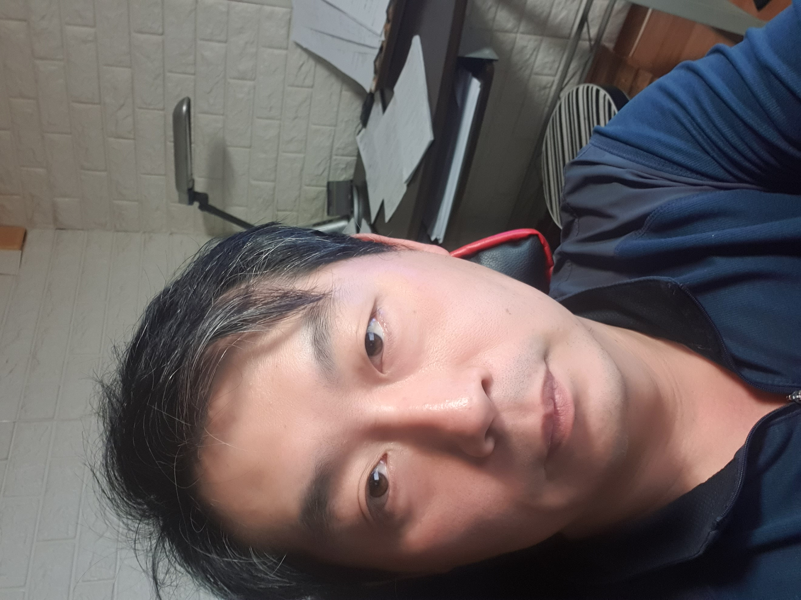

1978년에 태어나 인천에서 중고등학교를 나오고 세종대학교를 나와 건설회사에 다니다 퇴사하고 2015년 호주에 1년간 지내다가 2016 12월 24일 한국에 귀국하여 여러 일을 하다가 2017년 고물상 "고은자원"을 창업하였습니다.
주식으로 다날리고 호주가서 1년간 머무르다 한국에 돌아와 이것저것 하다가 부모님 도움을 받아 고물상을 차렸습니다. 나이는 먹고 열심히 일해야 되는데 생각만큼 잘 되진않지만 불효자로 진작에 은퇴하셔야 할 부모님을 부양하며 잘 살고 싶습니다.
주식으로 다날리고 호주가서 1년간 머무르다 한국에 돌아와 이것저것 하다가 부모님 도움을 받아 고물상을 차렸습니다. 나이는 먹고 열심히 일해야 되는데 생각만큼 잘 되진않지만 불효자로 진작에 은퇴하셔야 할 부모님을 부양하며 잘 살고 싶습니다.